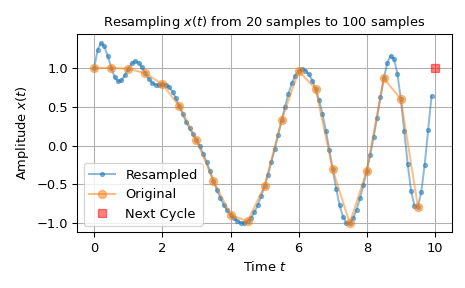
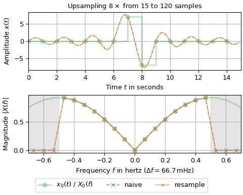
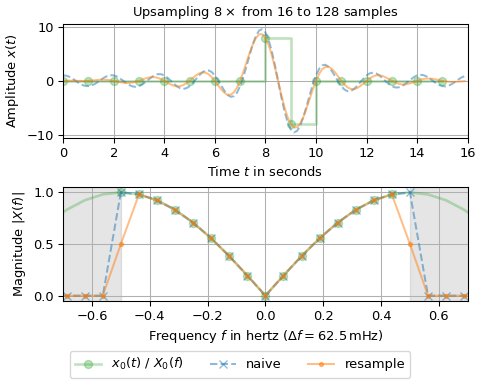
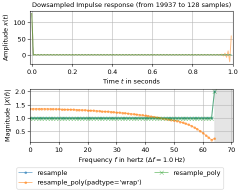

resample#
- scipy.signal.resample(x, num, t=None, axis=0, window=None, domain='time')[source]#
Resample x to num samples using the Fourier method along the given axis.
The resampling is performed by shortening or zero-padding the FFT of x. This has the advantages of providing an ideal antialiasing filter and allowing arbitrary up- or down-sampling ratios. The main drawback is the requirement of assuming x to be a periodic signal.
- Parameters:
- xarray_like
The input signal made up of equidistant samples. If x is a multidimensional array, the parameter axis specifies the time/frequency axis. It is assumed here that
n_x = x.shape[axis]specifies the number of samples andTthe sampling interval.- numint
The number of samples of the resampled output signal. It may be larger or smaller than
n_x.- tarray_like, optional
If t is not
None, then the timestamps of the resampled signal are also returned. t must contain at least the first two timestamps of the input signal x (all others are ignored). The timestamps of the output signal are determined byt[0] + T * n_x / num * np.arange(num)withT = t[1] - t[0]. Default isNone.- axisint, optional
The time/frequency axis of x along which the resampling takes place. The default is 0.
- windowarray_like, callable, str, float, or tuple, optional
If not
None, it specifies a filter in the Fourier domain, which is applied before resampling. I.e., the FFTXof x is calculated byX = W * fft(x, axis=axis).Wmay be interpreted as a spectral windowing functionW(f_X)which consumes the frequenciesf_X = fftfreq(n_x, T).If window is a 1d array of length
n_xthenW=window. If window is a callable thenW = window(f_X). Otherwise, window is passed toget_window, i.e.,W = fftshift(signal.get_window(window, n_x)). Default isNone.- domain‘time’ | ‘freq’, optional
If set to
'time'(default) then an FFT is applied to x, otherwise ('freq') it is assumed that an FFT was already applied, i.e.,x = fft(x_t, axis=axis)withx_tbeing the input signal in the time domain.
- Returns:
- x_rndarray
The resampled signal made up of num samples and sampling interval
T * n_x / num.- t_rndarray, optional
The num equidistant timestamps of x_r. This is only returned if parameter t is not
None.
See also
decimateDownsample a (periodic/non-periodic) signal after applying an FIR or IIR filter.
resample_polyResample a (periodic/non-periodic) signal using polyphase filtering and an FIR filter.
Notes
This function uses the more efficient one-sided FFT, i.e.
rfft/irfft, if x is real-valued and in the time domain. Else, the two-sided FFT, i.e.,fft/ifft, is used (all FFT functions are taken from thescipy.fftmodule).If a window is applied to a real-valued x, the one-sided spectral windowing function is determined by taking the average of the negative and the positive frequency component. This ensures that real-valued signals and complex signals with zero imaginary part are treated identically. I.e., passing x or passing
x.astype(np.complex128)produce the same numeric result.If the number of input or output samples is prime or has few prime factors, this function may be slow due to utilizing FFTs. Consult
prev_fast_lenandnext_fast_lenfor determining efficient signal lengths. Alternatively, utilizingresample_polyto calculate an intermediate signal (as illustrated in the example below) can result in significant speed increases.resampleis intended to be used for periodic signals with equidistant sampling intervals. For non-periodic signals,resample_polymay be a better choice. Consult thescipy.interpolatemodule for methods of resampling signals with non-constant sampling intervals.Array API Standard Support
resamplehas support for Python Array API Standard compatible backends in addition to NumPy. The following combinations of backend and device (or other capability) are supported.Library
CPU
GPU
NumPy
✅
n/a
CuPy
n/a
✅
PyTorch
✅
✅
JAX
✅
✅
Dask
✅
n/a
See Support for the array API standard for more information.
Examples
The following example depicts a signal being up-sampled from 20 samples to 100 samples. The ringing at the beginning of the up-sampled signal is due to interpreting the signal being periodic. The red square in the plot illustrates that periodictiy by showing the first sample of the next cycle of the signal.
>>> import numpy as np >>> import matplotlib.pyplot as plt >>> from scipy.signal import resample ... >>> n0, n1 = 20, 100 # number of samples >>> t0 = np.linspace(0, 10, n0, endpoint=False) # input time stamps >>> x0 = np.cos(-t0**2/6) # input signal ... >>> x1 = resample(x0, n1) # resampled signal >>> t1 = np.linspace(0, 10, n1, endpoint=False) # timestamps of x1 ... >>> fig0, ax0 = plt.subplots(1, 1, tight_layout=True) >>> ax0.set_title(f"Resampling $x(t)$ from {n0} samples to {n1} samples") >>> ax0.set(xlabel="Time $t$", ylabel="Amplitude $x(t)$") >>> ax0.plot(t1, x1, '.-', alpha=.5, label=f"Resampled") >>> ax0.plot(t0, x0, 'o-', alpha=.5, label="Original") >>> ax0.plot(10, x0[0], 'rs', alpha=.5, label="Next Cycle") >>> ax0.legend(loc='best') >>> ax0.grid(True) >>> plt.show()

The following example compares this function with a naive
rfft/irfftcombination: An input signal with a sampling interval of one second is upsampled by a factor of eight. The first figure depicts an odd number of input samples whereas the second figure an even number. The upper subplots show the signals over time: The input samples are marked by large green dots, the upsampled signals by a continuous and a dashed line. The lower subplots show the magnitude spectrum: The FFT values of the input are depicted by large green dots, which lie in the frequency interval [-0.5, 0.5] Hz, whereas the frequency interval of the upsampled signal is [-4, 4] Hz. The continuous green line depicts the upsampled spectrum without antialiasing filter, which is a periodic continuation of the input spectrum. The blue x’s and orange dots depict the FFT values of the signal created by the naive approach as well as this function’s result.>>> import matplotlib.pyplot as plt >>> import numpy as np >>> from scipy.fft import fftshift, fftfreq, fft, rfft, irfft >>> from scipy.signal import resample, resample_poly ... >>> fac, T0, T1 = 8, 1, 1/8 # upsampling factor and sampling intervals >>> for n0 in (15, 16): # number of samples of input signal ... n1 = fac * n0 # number of samples of upsampled signal ... t0, t1 = T0 * np.arange(n0), T1 * np.arange(n1) # time stamps ... x0 = np.zeros(n0) # input signal has two non-zero sample values ... x0[n0//2], x0[n0//2+1] = n0 // 2, -(n0 // 2) ... ... x1n = irfft(rfft(x0), n=n1) * n1 / n0 # naive resampling ... x1r = resample(x0, n1) # resample signal ... ... # Determine magnitude spectrum: ... x0_up = np.zeros_like(x1r) # upsampling without antialiasing filter ... x0_up[::n1 // n0] = x0 ... X0, X0_up = (fftshift(fft(x_)) / n0 for x_ in (x0, x0_up)) ... XX1 = (fftshift(fft(x_)) / n1 for x_ in (x1n, x1r)) ... f0, f1 = fftshift(fftfreq(n0, T0)), fftshift(fftfreq(n1, T1)) # frequencies ... df = f0[1] - f0[0] # frequency resolution ... ... fig, (ax0, ax1) = plt.subplots(2, 1, layout='constrained', figsize=(5, 4)) ... ax0.set_title(rf"Upsampling ${fac}\times$ from {n0} to {n1} samples") ... ax0.set(xlabel="Time $t$ in seconds", ylabel="Amplitude $x(t)$", ... xlim=(0, n1*T1)) ... ax0.step(t0, x0, 'C2o-', where='post', alpha=.3, linewidth=2, ... label="$x_0(t)$ / $X_0(f)$") ... for x_, l_ in zip((x1n, x1r), ('C0--', 'C1-')): ... ax0.plot(t1, x_, l_, alpha=.5, label=None) ... ax0.grid() ... ax1.set(xlabel=rf"Frequency $f$ in hertz ($\Delta f = {df*1e3:.1f}\,$mHz)", ... ylabel="Magnitude $|X(f)|$", xlim=(-0.7, 0.7)) ... ax1.axvspan(0.5/T0, f1[-1], color='gray', alpha=.2) ... ax1.axvspan(f1[0], -0.5/T0, color='gray', alpha=.2) ... ax1.plot(f1, abs(X0_up), 'C2-', f0, abs(X0), 'C2o', alpha=.3, linewidth=2) ... for X_, n_, l_ in zip(XX1, ("naive", "resample"), ('C0x--', 'C1.-')): ... ax1.plot(f1, abs(X_), l_, alpha=.5, label=n_) ... ax1.grid() ... fig.legend(loc='outside lower center', ncols=4) >>> plt.show()


The first figure shows that upsampling an odd number of samples produces identical results. The second figure illustrates that the signal produced with the naive approach (dashed blue line) from an even number of samples does not touch all original samples. This deviation is due to
resamplecorrectly treating unpaired frequency bins. I.e., the input x1 has a bin pair ±0.5 Hz, whereas the output has only one unpaired bin at -0.5 Hz, which demands rescaling of that bin pair. Generally, special treatment is required ifn_x != numandmin(n_x, num)is even. If the bin values at ±m are zero, obviously, no special treatment is needed. Consult the source code ofresamplefor details.The final example shows how to utilize
resample_polyto speed up the down-sampling: The input signal a non-zero value at \(t=0\) and is downsampled from 19937 to 128 samples. Since 19937 is prime, the FFT is expected to be slow. To speed matters up,resample_polyis used to downsample first by a factor ofn0 // n1 = 155and then pass the result toresample. Two parameterization ofresample_polyare used: Passingpadtype='wrap'treats the input as being periodic whereas the default parametrization performs zero-padding. The upper subplot shows the resulting signals over time whereas the lower subplot depicts the resulting one-sided magnitude spectra.>>> import matplotlib.pyplot as plt >>> import numpy as np >>> from scipy.fft import rfftfreq, rfft >>> from scipy.signal import resample, resample_poly ... >>> n0 = 19937 # number of input samples - prime >>> n1 = 128 # number of output samples - fast FFT length >>> T0, T1 = 1/n0, 1/n1 # sampling intervals >>> t0, t1 = np.arange(n0)*T0, np.arange(n1)*T1 # time stamps ... >>> x0 = np.zeros(n0) # Input has one non-zero sample >>> x0[0] = n0 >>> >>> x1r = resample(x0, n1) # slow due to n0 being prime >>> # This is faster: >>> x1p = resample(resample_poly(x0, 1, n0 // n1, padtype='wrap'), n1) # periodic >>> x2p = resample(resample_poly(x0, 1, n0 // n1), n1) # with zero-padding ... >>> X0 = rfft(x0) / n0 >>> X1r, X1p, X2p = rfft(x1r) / n1, rfft(x1p) / n1, rfft(x2p) / n1 >>> f0, f1 = rfftfreq(n0, T0), rfftfreq(n1, T1) ... >>> fig, (ax0, ax1) = plt.subplots(2, 1, layout='constrained', figsize=(5, 4)) >>> ax0.set_title(f"Dowsampled Impulse response (from {n0} to {n1} samples)") >>> ax0.set(xlabel="Time $t$ in seconds", ylabel="Amplitude $x(t)$", xlim=(-T1, 1)) >>> for x_ in (x1r, x1p, x2p): ... ax0.plot(t1, x_, alpha=.5) >>> ax0.grid() >>> ax1.set(xlabel=rf"Frequency $f$ in hertz ($\Delta f = {f1[1]}\,$Hz)", ... ylabel="Magnitude $|X(f)|$", xlim=(0, 0.55/T1)) >>> ax1.axvspan(0.5/T1, f0[-1], color='gray', alpha=.2) >>> ax1.plot(f1, abs(X1r), 'C0.-', alpha=.5, label="resample") >>> ax1.plot(f1, abs(X1p), 'C1.-', alpha=.5, label="resample_poly(padtype='wrap')") >>> ax1.plot(f1, abs(X2p), 'C2x-', alpha=.5, label="resample_poly") >>> ax1.grid() >>> fig.legend(loc='outside lower center', ncols=2) >>> plt.show()

The plots show that the results of the “pure”
resampleand the usage of the default parameters ofresample_polyagree well. The periodic padding ofresample_poly(padtype='wrap') on the other hand produces significant deviations. This is caused by the disconiuity at the beginning of the signal, for which the default filter ofresample_polyis not suited well. This example illustrates that for some use cases, adapting theresample_polyparameters may be beneficial.resamplehas a big advantage in this regard: It uses the ideal antialiasing filter with the maximum bandwidth by default.Note that the doubled spectral magnitude at the Nyqist frequency of 64 Hz is due the even number of
n1=128output samples, which requires a special treatment as discussed in the previous example.